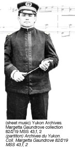

Panneau Culture : section 1 >
section 2 >
section 3
Culture Panel: section 1 >
section 2 >
section 3
|
Gédéon Pépin grandit sur une ferme du Québec, où il cultiva son amour de la musique. Il arriva à Dawson la tête pleine de rêves de richesses, comme chacun, mais il troqua rapidement son pic contre un orgue. Au cours des dix années qui suivirent, il devint un musicien bien connu dans la région, préparant souvent des arrangements musicaux destinés à accompagner des récitations de poèmes de Robert Service.  |
|
|
Gédéon Pépin grew up on a Québec farm where he cultivated his love of music. He arrived in Dawson City with dreams of riches like everyone else but soon traded his pickax for an organ. Over the course of the next ten years he became a well-known musical performer in Dawson, often arranging and performing musical accompaniments to recitations of Robert Service’s poems. |
Culture Panel: Section 3>